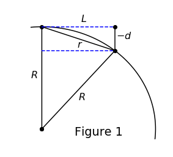

%matplotlib inline
import matplotlib.pyplot as plt
import matplotlib
import mpl_toolkits.mplot3d
import numpy as np
from numpy.linalg import cond, norm, inv
import pandas as pd
from scipy.stats import linregress as linreg
import scipy.sparse.linalg as spla
import pickle
import os.path
import itertools
from poly_basis import *
from rbf import *
from spherepts import *
from laplacebeltrami import *
from sphere_gaussians import get_sphere_gaussiansSphere
matplotlib.rcParams.update({'font.size': 16})n = 1000
eps = None
k = 100
d = 4
rbfs = rbf_labelsforcing, exact = get_sphere_gaussians()
nodes = gen_spiral_nodes(n)
normals = nodes
fig = plt.figure(figsize=(8,8))
ax = fig.add_subplot(111, projection='3d')
ax.scatter(nodes[1:,0], nodes[1:,1], nodes[1:,2], '.', color='b')
ax.scatter(nodes[0,0], nodes[0,1], nodes[0,2], '.', color='g')
ax.scatter(0, 0, 0, '.', color='k')
plt.show()for rbf in rbf_labels:
rbf_obj = rbf_dict[rbf]
try:
C = SOGr(nodes, normals, rbf_obj, eps, k, poly_deg=None, poly_type='p')
except:
print('%s failed' % rbf)
continue
fs = np.array([forcing(node) for node in nodes])
ds = C @ fs
es = np.array([exact(node) for node in nodes])
print('%s \t error: %g' % (rbf, la.norm(ds - es)/la.norm(es)) )epsilon set: 1.26732
gaussian error: 0.000168537
epsilon set: 0.77016
multiquadric error: 5.91256e-05
epsilon set: 0.589618
inverse quadratic error: 4.61109e-05
epsilon set: 0.6473
inverse multiquadric error: 4.9676e-05
r^2 log(r) failed
r^4 log(r) failed
r^6 log(r) failed/home/sage/Documents/rbf-rg-website/lib/rbf.py:138: RuntimeWarning: divide by zero encountered in true_divide
return 2/r**2
/home/sage/Documents/rbf-rg-website/lib/laplacebeltrami.py:240: RuntimeWarning: invalid value encountered in multiply
return phi1(r,eps) + d**2 * phi2(r,eps)r^8 log(r) error: 54.0995
r^10 log(r) error: 6.55187
r^12 log(r) error: 40.6901
r^14 log(r) error: 117.473
r^16 log(r) error: 402.605
r^18 log(r) error: 1029.03
r^3 failed
r^5 failed
r^7 failed/home/sage/Documents/rbf-rg-website/lib/rbf.py:358: RuntimeWarning: divide by zero encountered in true_divide
return 3/rr^9 error: 3.74363e+09
r^11 error: 7.0988e+08
r^13 error: 1.75277e+11
r^15 error: 5.94044e+09
r^17 error: 4.50495e+10Plane
def vogel(n):
theta_hat = np.pi*(3-np.sqrt(5))
inner_nodes = [(np.sqrt(i/n)*np.cos(i*theta_hat),
np.sqrt(i/n)*np.sin(i*theta_hat),
0) for i in range(1,n+1)]
return np.array(inner_nodes)forcing = lambda x: np.cos(x[0])*np.sin(x[1])
exact = lambda x: -np.sin(x[0])*np.sin(x[1]) + np.cos(x[0])*np.cos(x[1])nodes = vogel(n)
normals = np.zeros((n,3))
normals[:,2] = np.ones(n)
fig = plt.figure(figsize=(8,8))
ax = fig.add_subplot(111, projection='3d')
ax.scatter(nodes[1:,0], nodes[1:,1], nodes[1:,2], '.', color='b')
plt.show()for rbf in rbf_labels:
rbf_obj = rbf_dict[rbf]
try:
C = SOGr(nodes, normals, rbf_obj, eps, k, poly_deg=None, poly_type='p')
except:
print('%s failed' % rbf)
continue
fs = np.array([forcing(node) for node in nodes])
ds = C @ fs
es = np.array([exact(node) for node in nodes])
print('%s \t error: %g' % (rbf, la.norm(ds - es)/la.norm(es)) )epsilon set: 1.26732
gaussian error: 0.000168537
epsilon set: 0.77016
multiquadric error: 5.91256e-05
epsilon set: 0.589618
inverse quadratic error: 4.61109e-05
epsilon set: 0.6473
inverse multiquadric error: 4.9676e-05
r^2 log(r) failed
r^4 log(r) failed
r^6 log(r) failed/home/sage/Documents/rbf-rg-website/lib/rbf.py:138: RuntimeWarning: divide by zero encountered in true_divide
return 2/r**2
/home/sage/Documents/rbf-rg-website/lib/laplacebeltrami.py:240: RuntimeWarning: invalid value encountered in multiply
return phi1(r,eps) + d**2 * phi2(r,eps)r^8 log(r) error: 54.0995
r^10 log(r) error: 6.55187
r^12 log(r) error: 40.6901
r^14 log(r) error: 117.473
r^16 log(r) error: 402.605
r^18 log(r) error: 1029.03
r^3 failed
r^5 failed
r^7 failed/home/sage/Documents/rbf-rg-website/lib/rbf.py:358: RuntimeWarning: divide by zero encountered in true_divide
return 3/rr^9 error: 3.74363e+09
r^11 error: 7.0988e+08
r^13 error: 1.75277e+11
r^15 error: 5.94044e+09
r^17 error: 4.50495e+10Proof Plots
ts = np.linspace(-.1*np.pi, .6*np.pi, 100)
theta = 2*np.pi/9
fig = plt.figure(figsize=(4,4))
plt.plot([0, 0, np.sin(theta), 0], [0, 1, np.cos(theta), 0], 'ko-')
plt.plot(np.cos(ts), np.sin(ts), 'k-')
plt.plot([0, np.sin(theta)], [1,1], 'b--')
plt.plot([np.sin(theta)], [1], 'ko')
plt.plot([0, np.sin(theta)], [np.cos(theta),np.cos(theta)], 'b--')
plt.plot([np.sin(theta), np.sin(theta)], [np.cos(theta), 1], 'k-')
plt.text(-.1, .5 , '$R$')
plt.text(.5*np.sin(theta), .5*np.cos(theta)-.1 , '$R$')
plt.text(.9*np.sin(theta/2), .9*np.cos(theta/2)-.05, '$r$')
plt.text(np.sin(theta)+.01, (1+np.cos(theta))/2, '$-d$')
plt.text(np.sin(theta/2), 1.05, '$L$')
plt.xlim(-.1, 1.1)
plt.ylim(-.1, 1.2)
plt.axis('off')
plt.title('Figure 1', y=0)
plt.show()